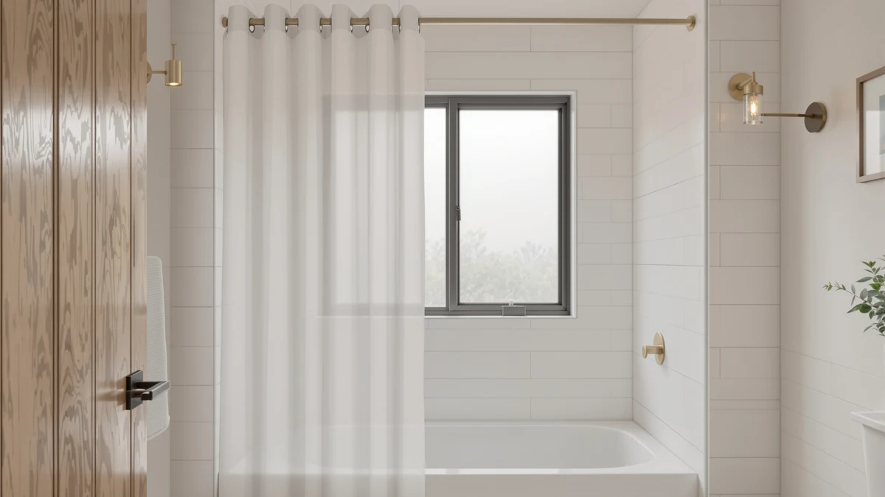

Quick Answer
The Madison Park Arlo shower curtain is a $49.98, single 72-inch by 72-inch panel made of 100% cotton with no printed pattern. Against three linen-style alternatives from BTTN and Mrs.Naturall, all priced under $38 and two of them cut to a wider 108 inches, the Arlo's cotton build and classic size are the main things setting it apart. None of the four listings currently carries a published star rating.
Our pick: Madison Park Arlo Shower Curtain, $49.98 Check Price on Amazon
Bottom line: our top pick is the Madison Park Arlo Shower Curtain for Bathroom at $49.98.
Things to Know Before You Buy
- The Madison Park Arlo shower curtain costs $49.98, the highest price of the four curtains covered in this Madison Park Arlo shower curtain review.
- It's a single 100% cotton panel sized at 72 inches by 72 inches, with no wider or patterned version currently sold.
- BTTN's two Boho Scalloped Linen curtains run $37.99 and $36.99 and both ship at a wider 108 inches by 72 inches.
- Mrs.Naturall's Linen Curtains 108 Inches cost $36.99 for a two-panel, 52-inch by 108-inch set.
- None of the four listings compared here currently carry a published star rating or review count, so this comparison relies on material, size, and price rather than a review track record.
This Madison Park Arlo shower curtain review compares its 100% cotton build, its single 72-inch by 72-inch size, and its $49.98 price against three lower-priced linen-style alternatives to see which one earns a spot on your shower rod. Madison Park's listing is a single panel with no printed pattern, aimed at a plain, hotel-style look rather than a bold decorative statement. We checked what the spec sheet says about the material and the dimensions, then lined that up against how the three alternatives compare on price and size, because none of these four listings currently carries a public star rating or review count to lean on.
At $49.98, the Arlo costs more than every alternative in this comparison, each of which sits under $38. That gap matters because the Arlo also ships in only one size, 72 inches by 72 inches, while two of the three alternatives run a wider 108 inches across. If your bathroom calls for a standard-width single panel in plain cotton, the price premium buys a simpler, more classic look. If your rod runs wider, or a boho or linen-style finish fits your space better, the alternatives below are worth a look before you decide. None of the four curtains in this comparison currently shows a public star rating, so price, material, and size carry most of the weight in deciding between them.
Why You Should Trust Us
Best Shower Curtains reviews bathroom products by comparing manufacturer specs, current Amazon pricing, and available owner feedback, not by running a private testing lab. Ilane Tall, our home and bath editor, researched this Madison Park Arlo shower curtain review by checking the Arlo's listed material, size, and price against three linen-style alternatives in the same price bracket. We revisit prices on a regular schedule and say so clearly when a listing has not built up a public star rating or review count we can check claims against, which is the case for all four curtains compared here. The goal is a comparison you can verify yourself, built on facts rather than a borrowed opinion.
Our Research Experience
We do not run a physical testing lab, and nobody on our team has hung the Madison Park Arlo shower curtain in a shower to see how it holds up. Our process for this Madison Park Arlo shower curtain review instead lines up the published material, size, and price against the three alternatives covered below, then checks that against comparable cotton and linen-style curtains we have already researched elsewhere on this site. None of the four listings here currently shows a star rating or review count, so we cannot weigh in on long-term durability or how the fabric holds up after repeated washing, and we say that plainly rather than guess. We also note when a manufacturer claim, such as a fabric weight or a care instruction, appears only on the product listing itself and nowhere else we could cross-check it.
Overview & Specs

Madison Park Arlo Shower Curtain
What we like
- 100% cotton construction, with no synthetic blend listed on the spec sheet
- Standard 72-inch by 72-inch size fits most tub and shower-stall rods without extra hardware
- Plain, unpatterned design suits a hotel-style or minimalist bathroom
Flaws but not dealbreakers
- Costs $49.98, more than $12 above every alternative compared in this review
- Ships in a single size only, so a rod wider than 72 inches will leave gaps at the edges
- No published star rating or review count yet, so there is no track record to check the cotton's durability against
| Material | 100% cotton |
| Size | 72"W x 72"L (Pack of 1) |
The Madison Park Arlo shower curtain is a single 72-inch by 72-inch cotton panel with no printed pattern, built for a bathroom where a plain, classic look matters more than a decorative statement. At $49.98, it's the most expensive curtain in this comparison by a wide margin, and the spec sheet lists 100% cotton as the only material, with no synthetic blend mentioned on the listing.
Because the Arlo ships in one size only, a standard 72-inch rod is the only configuration it covers, and a wider or longer bathroom setup won't get a matching cut from Madison Park. None of the four curtains in this Madison Park Arlo shower curtain review currently carries a public star rating or review count, so the price difference here comes down to material and size rather than a documented track record. Shoppers who want a single, all-cotton panel in a familiar size pay a premium for that simplicity compared with the wider, linen-look alternatives below.
What We Liked
The clearest strength of the Madison Park Arlo shower curtain is its material. The spec sheet lists it as 100% cotton with no synthetic blend, a more straightforward composition than the two BTTN picks compared below, both of which use a waterproof polyester weave instead. A plain, unpatterned cotton panel also fits a wider range of bathroom styles than a boho scalloped-edge design: there's no print or trim to clash with existing decor. The standard 72-inch by 72-inch size covers the most common tub and shower-stall rod length, so most buyers won't need to measure before adding it to cart. For a bathroom that calls for a simple, classic cotton curtain rather than a textured or patterned one, the Arlo delivers exactly that without any extra design flourish to work around.
What Could Be Better
Price is the most obvious drawback in this Madison Park Arlo shower curtain review. At $49.98, the Arlo costs at least $12 more than every alternative covered here, and neither cheaper option drops down to a lesser material to hit that price: two of them use a heavier waterproof polyester weave instead. The single 72-inch by 72-inch size is also a limit rather than a feature if your rod runs wider than a standard tub, since Madison Park doesn't offer a 108-inch cut the way BTTN does on both of its alternatives. And because the Arlo has no published star rating or review count on its listing, buyers are relying on the spec sheet alone rather than a documented pattern of owner feedback to judge how the cotton holds up over time.
Who Is It For?
This Madison Park Arlo shower curtain suits a bathroom with a standard tub or shower stall and a rod close to 72 inches wide, where a plain cotton panel fits the existing decor better than a patterned or textured alternative. It's a reasonable pick if an all-cotton material matters to you more than price, because none of the three cheaper alternatives in this comparison match that simple composition. Skip it if your rod runs wider than 72 inches: Madison Park doesn't sell a 108-inch version the way BTTN does. The same goes if a boho scalloped edge or a linen-look weave fits your bathroom's style better than a plain panel. Anyone deciding between all four curtains should weigh size and material first. The $49.98 price only makes sense if the standard cotton panel is specifically what you're after. A renter working with a fixed-width rod in a standard apartment bathroom is a good match for the Arlo's single size, while anyone furnishing a larger primary bathroom with a wider rod gets more mileage out of the 108-inch picks.
Alternatives to Consider
If the Madison Park Arlo's $49.98 price or single 72-inch size doesn't fit your bathroom, these three alternatives round out the comparison, all priced under $38 and two of them cut to a wider 108 inches.

Also Great
BTTN 108x72 Boho Scalloped Linen
This BTTN curtain costs $37.99, about $12 less than the Madison Park Arlo, and swaps the plain cotton panel for a 108-inch-wide, scalloped-edge linen-look weave if a wider rod or a boho finish fits your bathroom better.
$37.99
Check Price on Amazon
Best Value
Mrs.Naturall Linen Curtains 108 Inches
Mrs.Naturall's 108-inch linen curtain runs $36.99, the lowest price in this comparison, trading the Arlo's solid cotton panel for a lighter, linen-look fabric if a softer, more textured look matters more to you than a plain weave.
$36.99
Check Price on Amazon
Best Value
BTTN 108x72 Boho Scalloped Linen
This second BTTN curtain matches its cream sibling at $36.99 and keeps the same 108-inch, scalloped-edge linen-look design in white instead, a third option if the Madison Park Arlo's smaller size or higher price rules it out for you.
$36.99
Check Price on AmazonFrequently Asked Questions
Does the Madison Park Arlo shower curtain come in a size other than 72 by 72 inches?
No. The listing covers a single 72-inch by 72-inch panel, so a rod wider or narrower than that will not get a matching cut from Madison Park. Shoppers who need a wider curtain should compare BTTN's 108-inch alternatives covered in this Madison Park Arlo shower curtain review instead.
Is the Madison Park Arlo shower curtain worth $49.98 compared to the cheaper alternatives?
It depends on what matters most to you. The Arlo is the only 100% cotton option in this comparison, while the three cheaper alternatives use a linen-look or waterproof polyester weave instead, so the extra cost buys a simpler material rather than a proven review history, since none of the four listings currently shows a public star rating.
Does the Madison Park Arlo shower curtain have a published star rating?
No. As of this Madison Park Arlo shower curtain review, the listing does not show a public star rating or review count, and neither do the three alternatives compared here, so this comparison relies on material, size, and price rather than a documented review history.
Final Verdict
This Madison Park Arlo shower curtain review comes down to material versus price. Madison Park's Arlo costs $49.98 for a single 72-by-72-inch, 100% cotton panel with no pattern, at least $12 more than any alternative compared here. BTTN's two 108-inch scalloped linen-look curtains and Mrs.Naturall's 108-inch linen pick all undercut it while offering a wider size, though none of the four curtains in this comparison currently carries a public star rating to lean on. For a standard-width bathroom where a plain, all-cotton panel is specifically what you want, Madison Park's Arlo is the pick worth the extra cost. Shoppers with a wider rod or a preference for a linen-look finish should compare the BTTN or Mrs.Naturall alternatives before deciding.